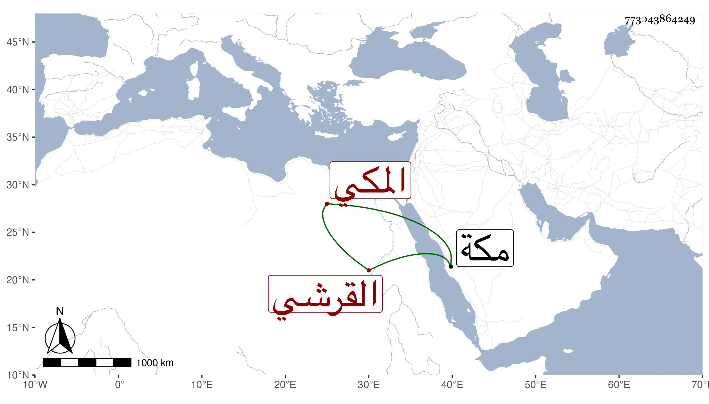

0902Sakhawi.DawLamic.ITO20230111-ara1.EIS1600.773043864249
Biography ID: 773043864249
1028
يحيى بن الكمال أبي البركات محمد بن علي بن أبي البركات محمد بن محمد ابن حسين بن ظهيرة القرشي المكي الماضي أبوه وجده ويعرف كسلفه بابن ظهيرة . ولد في يوم الثلاثاء ثاني عشرى جمادى الثانية سنة اثنتين وسبعين وثمانمائة وأمه حبشية لأبيه ومات أبوه وهو صغير فنشأ في كفالة عمه وقرأ القرآن وغيره وسمع علي وعلى عميه وغيرهم وهو فطن يقظ شهم . مات بمكة قبل إكمال العشرين في ذي الحجة سنة إحدى وتسعين بعد عمه بقليل ودفن بتربتهم عوضه الله الجنة .
